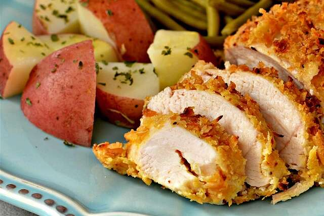

Lasagna

Boneless Chicken Breast Recipes
When the chips are down and we need dinner on the table fast, we turn, like the rest of America, to skinless, boneless chicken breasts to save the day
Keep a pack of super-versatile boneless, skinless chicken breasts in the freezer, and you'll always have access to quick-and-easy, family-pleasing meals.
Thank you and Enjoy your dinner.
Ingredients.
- 1 cup Wheat flour
- 1/4kgs Boneless chicken
- Salt
- 3 tp Olive oil
- 1 Ginger
- 3 Garlic
- 2 tpSoy source
- 2 Onions
Steps.
- Boil bonelss cheken for 30mins
- Make a soft dough two cups of water
- In a source pan fry chopped onions,garlic and ginger
- Add a pinch of salt and mix with the boiled chicken
- Roll out the dough
- Put the curry in the rolled dough and spinkle soy source then fold
- Put in an Oven and bake for 15mins